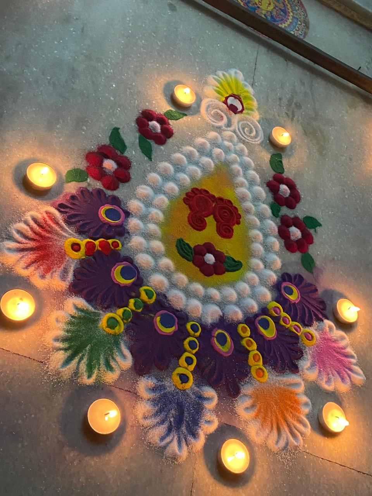
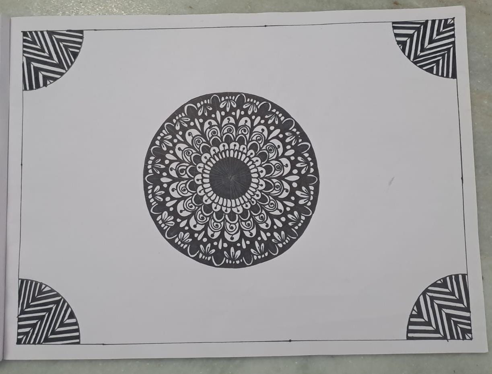

Hello, I am Sriya Behera, a passionate artist and skilled crafter.
Welcome to my portfolio,
where I share my journey through a diverse range of
each reflecting my creativity and dedication.
RANGOLIS

Hello everyone! These Rangolis are a vibrant testament to my love for traditional art, each crafted for Diwali celebrations over the years. Each design reflects my dedication to this beautiful festival and my passion for cultural artistry.Creating these intricate patterns brings immense joy and satisfaction, as they symbolize the beauty and richness of our traditions. I hope you find as much delight in viewing them as I did in making them.
ART

In this section, you'll find a collection of my art projects, each piece crafted with passion and creativity, reflecting my unique perspective and dedication to artistic expression.These artworks span various styles and mediums, showcasing my versatility and commitment to exploring new techniques. I hope they inspire you as much as they have brought me joy in creating them.
CRAFTS
Welcome to my crafts section! Here, you’ll discover a variety of handmade creations, each meticulously crafted with attention to detail and love for the art of crafting.My craft projects showcase my love for creating unique and beautiful items, each crafted with care and precision.